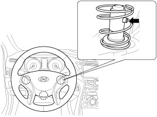
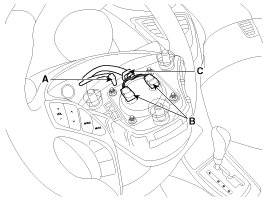
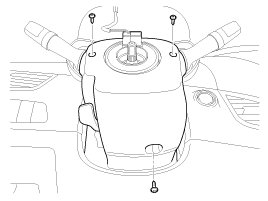
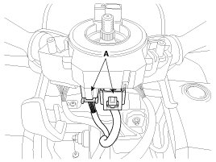
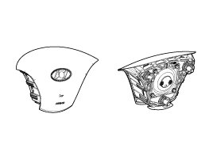
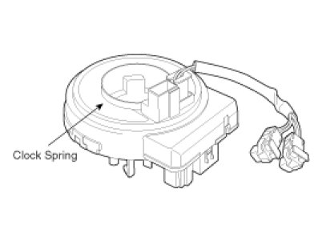
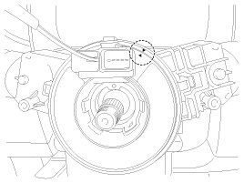

Repair Procedures
Removal
1. Disconnect the battery negative cable and wait for at least three minutes before beginning work.
2. Remove the driver airbag module from the steering wheel after pressing the snap fit pin stopper.

3. Remove the wiring fixing clip (C) and disconnect the horn connector (A).

4. Release the connector locking pin, then disconnect the driver airbag module connector (B).
CAUTION:
The removed airbag module should be stored in a clean, dry place with the pad cover facing up.
5. Remove the steering wheel and steering wheel column shroud.

6. Disconnect the clock spring and horn connector (A), then remove the clock spring.

Inspection
Driver Airbag (DAB)
If any improper parts are found during the following inspection, replace the airbag module with a new one.
CAUTION:
Never attempt to measure the circuit resistance of the airbag module (squib) even if you are using the specified tester. If the circuit resistance is measured with a tester, accidental airbag deployment will result in serious personal injury.
1. Check pad cover for dents, cracks or deformities.
2. Check the airbag module for denting, cracking or deformation.
3. Check hooks and connectors for damage, terminals for deformities, and harness for binds.
4. Check airbag inflator case for dents, cracks or deformities.

5. Install the airbag module to the steering wheel to check for fit or alignment with the wheel.
Clock Spring
1. If, as a result of the following checks, even one abnormal point is discovered, replace the clock spring with a new one.
2. Check connectors and protective tube for damage, and terminals for deformities.

Installation
1. Remove the ignition key from the vehicle.
2. Disconnect the battery negative cable from battery and wait for at least three minutes before beginning work.
3. Connect the clock spring harness connector and horn harness connector to the clock spring.
4. Set the center position by setting the marks between the clock spring and the cover into line. The mark (><) should be matched by turning the clock spring clockwise to the stop and then 3.0 revolutions counterclockwise.

5. Install the steering wheel column shroud and the steering wheel.
6. Connect the Driver Airbag (DAB) module connector and horn connector, and then install the Driver Airbag (DAB) module on the steering wheel.
7. Connect the battery negative cable.
8. After installing the airbag, confirm proper system operation:
A. Turn the ignition switch ON; the SRS indicator light should be turned on for about six seconds and then go off.
B. Make sure horn button works.